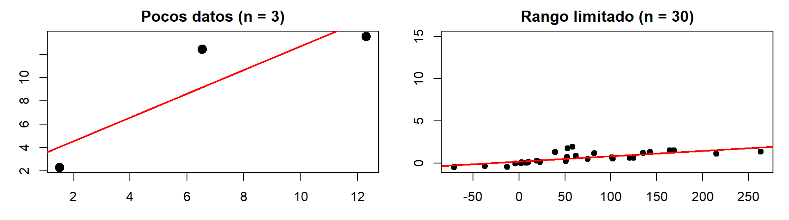
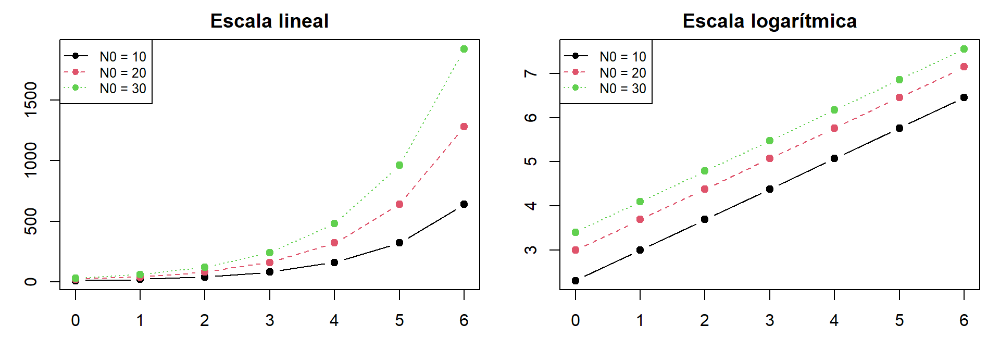
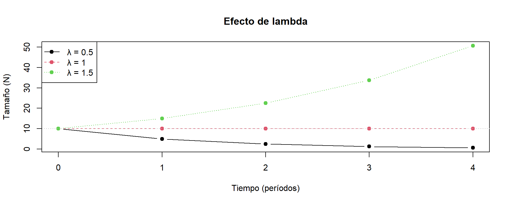

Clase 2.1–2.2 — Modelos y crecimiento geométrico
11/11/2026
Clase 2.1–2.2 — Crecimiento poblacional
Carlos Iván Espinosa Universidad Técnica Particular de Loja
Al finalizar esta sesión, podrás:
En el bosque seco de Catamayo, han monitoreado una población de insectos anuales durante cinco años:
| Año | Individuos |
|---|---|
| 1 | 200 |
| 2 | 230 |
| 3 | 198 |
| 4 | 235 |
| 5 | 220 |
¿La población está creciendo, decreciendo o se mantiene estable?
Detectar una tendencia depende de dos cosas:

Por eso necesitamos modelos: imponen estructura teórica a los datos.
Un modelo es una representación simplificada de la realidad.
No captura todos los detalles, sino los procesos importantes para responder una pregunta.
Los modelos sirven para:
“Todos los modelos son incorrectos, pero algunos son útiles” — George Box
Todo modelo tiene supuestos: condiciones que se asumen verdaderas.
Ejemplos de supuestos en modelos de crecimiento:
Ningún supuesto se cumple exactamente, pero el modelo sigue siendo útil como aproximación.
Piensen en un modelo que hayan usado fuera de la ecología (un mapa, una receta, un presupuesto).
¿Qué supuestos tiene? ¿En qué casos falla?
Los modelos de crecimiento se dividen según cómo tratan el efecto de la densidad:
Denso-independiente
Modelos: geométrico y exponencial
Denso-dependiente
Modelos: logístico
Se usa para poblaciones con reproducción estacional:
La población se reproduce en eventos discretos, no de forma continua.
Antes de la ecuación, entendamos la tasa per cápita:
\[\text{Tasa} = \frac{N_{t+1}}{N_t}\]
Ejemplo: si una población pasa de 2 a 4 individuos en un año:
\[\text{Tasa} = \frac{4}{2} = 2\]
Si la tasa es constante, la población se duplica cada año.
Una población de mariposas se duplica cada tres meses:
| Mes | \(N_t\) | \(\lambda\) |
|---|---|---|
| Enero | 2 | — |
| Abril | 4 | 4/2 = 2 |
| Julio | 8 | 8/4 = 2 |
| Octubre | 16 | 16/8 = 2 |
| Enero siguiente | 32 | 32/16 = 2 |
\(\lambda = 2\) constante: la población se duplica cada tres meses.
\[N_{t+1} = \lambda \cdot N_t\]
Donde:
Interpretación: - \(\lambda > 1\) → la población crece - \(\lambda = 1\) → la población se mantiene estable - \(\lambda < 1\) → la población decrece
Si \(\lambda\) es constante, podemos proyectar a cualquier período:
\[N_t = N_0 \cdot \lambda^t\]
Ejemplo con mariposas (\(N_0 = 2\), \(\lambda = 2\)):
| Período (3 meses) | \(N_t\) |
|---|---|
| 0 | 2 |
| 1 | 4 |
| 4 | 32 |
| 8 | 512 |
| 12 (3 años) | 8.192 |
¡De 2 mariposas a más de 8.000 en 3 años!
Con \(N_0 = 100\) y \(\lambda = 1,5\), ¿cuántos individuos habría en el año 15?
¿Es realista ese número?
Si dos poblaciones crecen con la misma \(\lambda\) pero parten de tamaños distintos, ¿crecen a la misma tasa?

Las tres crecen a la misma tasa (\(\lambda = 2\)): en escala logarítmica, las rectas son paralelas.
Pequeñas diferencias en \(\lambda\) producen grandes diferencias en el futuro:

\(\lambda = 1,5\) → crece; \(\lambda = 1\) → estable; \(\lambda = 0,5\) → decrece.
En la práctica, \(\lambda\) varía entre años. ¿Qué valor usar?
Ejemplo: población de ninfálidos con datos 100, 50, 75.
Media aritmética: \((0,5 + 1,5)/2 = 1,0\)
Media geométrica: \(\sqrt{0,5 \cdot 1,5} = \sqrt{0,75} \approx 0,866\)
La media geométrica es más adecuada porque el crecimiento es multiplicativo, no aditivo.
¿Cuál de las dos medias predice mejor el tamaño real en el año 3 (75)?
¿Por qué la media aritmética sobreestima el crecimiento?
En la lectura 1.3 vimos \(r\). La relación es:
\[r = \ln(\lambda)\] \[\lambda = e^r\]
Ejemplos: - \(\lambda = 1,5\) → \(r = \ln(1,5) \approx 0,405\)
\(\lambda = 1\) → \(r = 0\)
\(\lambda = 0,8\) → \(r = \ln(0,8) \approx -0,223\)
\(\lambda\) se usa en modelos discretos; \(r\) en modelos continuos. Miden lo mismo.
A pesar de esto, es útil como punto de partida y herramienta de exploración.
En el bosque seco, muchas especies de insectos tienen ciclos anuales:
Pregunta ecológica: ¿cómo cambia el tamaño de la población de un año a otro?
Ejemplo: \(\lambda = 1,2\) en años húmedos, \(\lambda = 0,8\) en años secos → la población fluctúa enormemente.
Si el cambio climático reduce la frecuencia de años húmedos:
Los modelos no solo describen: también anticipan riesgos.
¿Qué especie de Loja conoce que tenga reproducción estacional?
¿Cómo estimarían su \(\lambda\)?
Gracias.